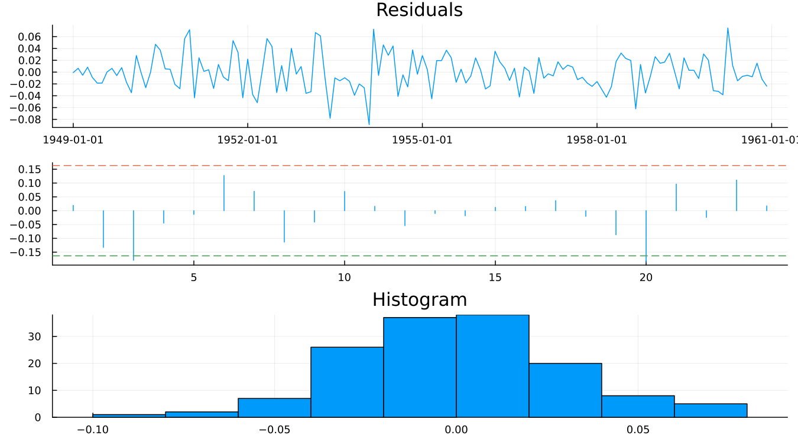
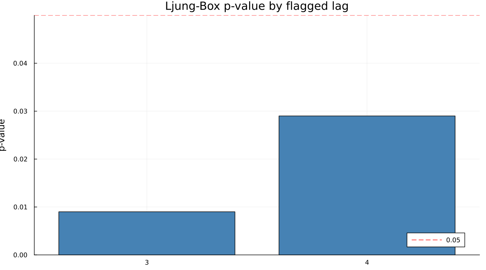

19. Model Adequacy
19.1 Residual autocorrelation
Everything in chapters 17 and 18 evaluated the output — the adjusted series itself. This chapter evaluates the model that produced it, via the same regARIMA residual diagnostics any time series model gets: are the residuals free of leftover autocorrelation?

The middle panel plots the residual ACF against a significance band, and two lags cross it — 3 and 20. The ACF/PACF panel is where a reader spots it visually; the Ljung-Box test gives it a number:

The airline model — the same model that produced a Q of 0.20, passed all eleven M statistics, and drove QS to exactly zero on the adjusted series — fails Ljung-Box at lags 3 and 4 (p = 0.009 and p = 0.029).
Two details worth explaining rather than glossing over:
- X-13 reports only the lags where the test is significant —
nlbq = 2, listing lags 3 and 4 specifically. An empty list is the good outcome; a short list, as here, is the informative one, not a sign that something is broadly wrong. - The ACF significance band X-13 draws is
acflimit = 1.6standard errors, not the 1.96 a reader familiar with a plain 95% normal interval will expect. The two conventions are close but not the same number, and treating 1.6 as if it were 1.96 would make X-13's own flagged lags look like false positives.
19.2 Normality and other checks
The distributional side of the same residuals is clean: skewness 0.0900, kurtosis 3.0698 (a normal distribution's own kurtosis is 3.0), Durbin-Watson 1.9504 (close to the no-first-order-autocorrelation value of 2.0). The failure in 19.1 is specifically about autocorrelation at lags 3 and 4, not about the residuals' shape — a distinction the diagnostics above make precisely rather than leave to guesswork.
19.3 What a failure actually means
A Ljung-Box failure like this one is usually a sign of a missing regressor — a calendar effect, an unflagged outlier, a level shift — rather than evidence that the ARIMA order itself is wrong. This is the natural place to point back to Part III's own regressors and Chapter 12's outlier handling as the first things worth checking before touching the model order at all.
And the honest verdict for this particular case: the airline model is famously adequate, not perfect, and every other diagnostic in this book so far has been clean on it. Two significant lags out of a residual ACF this long, with no distributional problem alongside them, is a mild failure that no practitioner would treat as grounds to reject the adjustment. Reporting a failing p-value without saying whether to care about it teaches a reader nothing — so: this one is real, it is small, and it does not change the recommendation to use this model.
See also: Chapter 17 for the M statistics and Q this same model passed cleanly. Part III (chapters 10–12) for the calendar and outlier regressors a Ljung-Box failure like this one usually points back to.